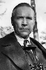

Also known as:Giornata nera per l'ariete (original title)
Country:Italy, 93 minutes
Spoken languages:Italian
Genres:Mystery, Thriller, Horror
Director(s):Luigi Bazzoni
Writer(s):David McDonald Devine, Luigi Bazzoni, Mario Fanelli, Mario Di Nardo
Video Codec:Unknown
Number: 3027


Certification:
Storyline:
A journalist finds himself on the trail of a murderer who's been targeting people around him, while the police are considering him a suspect in their investigation.
Cast: 


Medium: Bluray,
Comments: Part of: Giallo Essentials - Red
Loaned: No
Aspect ratio: Unknown